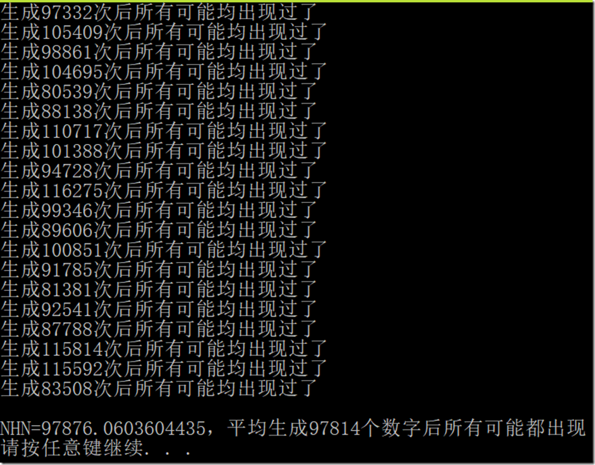

© 2019 《算法（第四版）》C# 题解 | Provided By 沈星繁
搜索解答
目前已完成到 2.5
1.4.45
上次更新：2019-02-11
题目
1.4.45 优惠券收集问题。 用和上一题相同的方式生成随机整数。 通过实验验证生成所有可能的整数值所需生成的随机数总量为 \(~NH_N\)（调和级数）。
解答
建立一个布尔数组，将每次随机出来的数作为下标，将相应位置的布尔值改为 true，每次随机都检查一遍这个数组是否都是 true。 
代码
using System;
namespace _1._4._45
{
/*
* 1.4.45
*
* 优惠券收集问题。
* 用和上一题相同的方式生成随机整数。
* 通过实验验证生成所有可能的整数值所需生成的随机数总量为 ~NHN。
* （这里的 HN 中 N 是下标）
*
*/
class Program
{
// HN 指的是调和级数
static void Main(string[] args)
{
Random random = new Random();
int N = 10000;
bool[] a = new bool[N];
int randomSize = 0;
int times = 0;
for (times = 0; times < 20; ++times)
{
for (int i = 0; i < N; ++i)
{
a[i] = false;
}
for(int i = 0; true; ++i)
{
int now = random.Next(N);
a[now] = true;
if (IsAllGenerated(a))
{
randomSize += i;
Console.WriteLine($"生成{i}次后所有可能均出现过了");
break;
}
}
}
Console.WriteLine($"\nNHN={N * HarmonicSum(N)}，平均生成{randomSize / times}个数字后所有可能都出现");
}
/// <summary>
/// 计算 N 阶调和级数的和。
/// </summary>
/// <param name="N">调和级数的 N 值</param>
/// <returns>N 阶调和级数的和。</returns>
static double HarmonicSum(int N)
{
double sum = 0;
for (int i = 1; i <= N; ++i)
{
sum += 1.0 / i;
}
return sum;
}
/// <summary>
/// 检查所有数字是否都生成过了。
/// </summary>
/// <param name="a">布尔数组。</param>
/// <returns>全都生成则返回 true，否则返回 false。</returns>
static bool IsAllGenerated(bool[] a)
{
foreach (bool i in a)
{
if (!i)
return false;
}
return true;
}
}
}